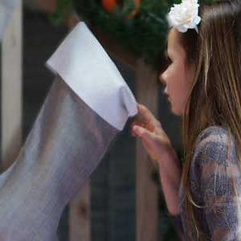

<div class="product-main">
    <div class="product">
        <div>
            <a class="highslide" onclick="return hs.expand(this, config1 )" href="https://roughlinen.com/images/xmas-stocking-rev-no-initial.jpg" title="Rough Linen Orkney Natural Christmas Stocking"></a>
        </div>
        <div id="description">
            <h1>Christmas Stocking</h1>
            <h2 class="alignRight">Orkney Natural</h2>
            <h3 class="alignRight">$29 plain &#8212; with initial  $34</h3>
            <div class="alignRight fine_print"></div>
            <div id="buy_button" class="floatright">add to basket</div>
            <p class="clearBoth">
                Christmas stockings used to be traditional treats &#8212; a clementine and a lump of coal, wrapped toffee, nuts and a small toy &#8212; all intended to keep us playing happily in our room until a respectable hour.
            </p>
            <br>
            <p>This tradition has morphed into super-sized Christmas stockings hung on the mantle.
            </p>
            <br>
            <p>Our stockings are neatly sized to discourage greed, but still capacious enough for an array of charming and thoughtful treats.
            </p>
        </div>
        <!-- end description -->
    </div>
    <!-- end rightColumn -->
</div>
<!-- end main_product -->

